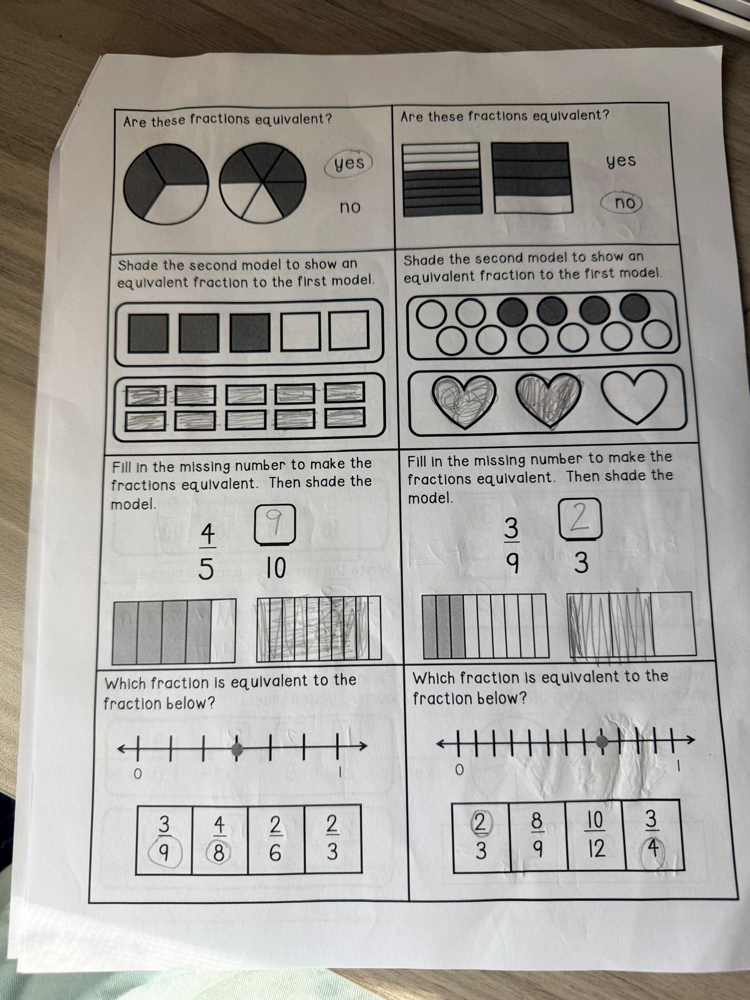

Are these fractions equivalent? (two circle models)
Are these fractions equivalent? (two rectangle models)
Shade the second model to show an equivalent fraction to the first model. (squares)
Model 1 shows . Write how many of the 10 small squares you shaded:
Equivalent fraction you made:
Shade the second model to show an equivalent fraction. (circles → hearts)
Model 1 fraction:
How many hearts you shaded (out of 3):
Equivalent fraction:
Fill in the missing number to make the fractions equivalent. Then shade the model.
45 = ?10
Fill in the missing number to make the fractions equivalent. Then shade the model.
39 = ?3
Which fraction is equivalent to the point on the number line? (first number line — dot a little past the middle between 0 and 1)
Which fraction is equivalent to the point on the number line? (second number line — dot near the right end)